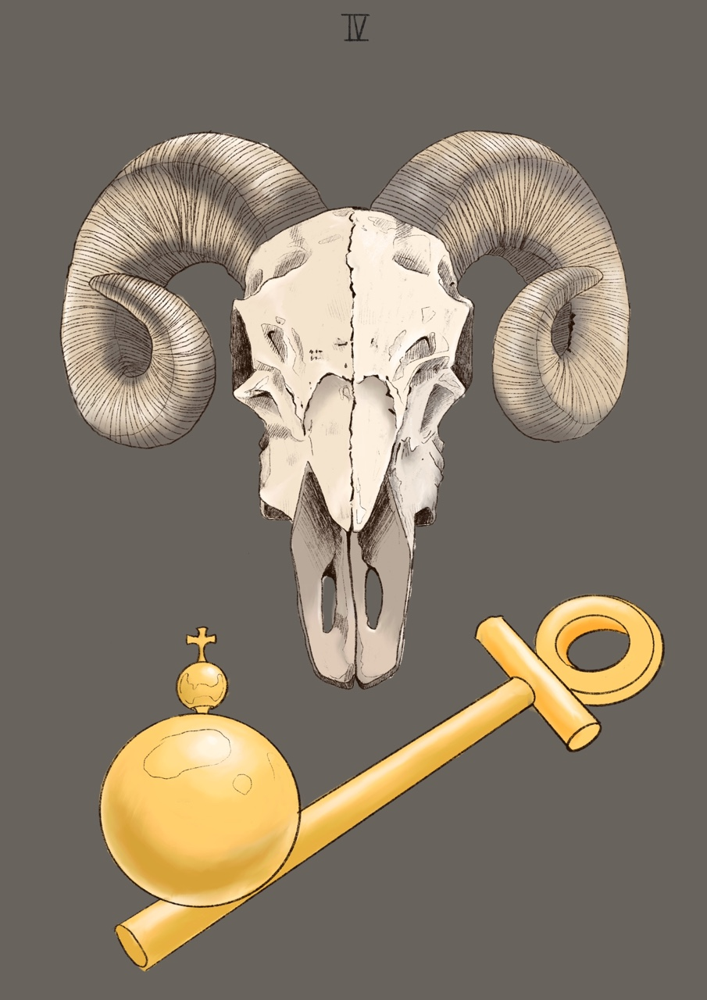

The emperor
부성적인 체험, 영적인 이상, 신조, 통찰력, 성취욕, 권력욕, 야망, 구체적, 행동력, 자신감, 경직, 독선, 독단, 완고함, 거만함, 자기 존중
살아가는데 있어서 지니게 되는 영적인 이상, 신조, 자신감이나 성취욕을 자극하는 권위와 야망, 목표를 이루는 데 필요한 통찰 등을 구현시키는 것은 아버지라고 신화에서는 나와있다.
여기서 가장 높은 가치가 주어지는 것은 몸이 아니라 영이며, 우리에게 요구되는 것은 타고난 직관보다는 행동이다.
우리 내면에 존재하는 아버지는 자기 존중심을 키운다. 그것은 인생의 도전과 맞설 때 자신의 견지를 확고히 할 수 있게 해준다. 제우스는 자비로워서 약자와 좌절한 자들을 보살펴준다. 그러나 자신의 권위가 도전받고 그의 법이 깨어지면 분노하여 징벌한다. 그러므로 제우스는 심리적인 차원에서 경직, 독선으로 표현되는 어두운 측면을 갖고 있다
내면의 아버지와 교감하면 우리는 자신의 능력을 인식하게 되고 새로운 사상을 세상에 구체화 시키는 능력을 갖게 된다. 그러나 내면의 아버지에 의해 휘둘리게 되면 독단에 빠져 모든 인간적인 감정이 그 완고함과 거만함에 의해 파괴되어 버린다. 따라서 제우스처럼 우리는 구습을 혁파하고 보다 새롭고 창조적인 질서를 세워야만 한다